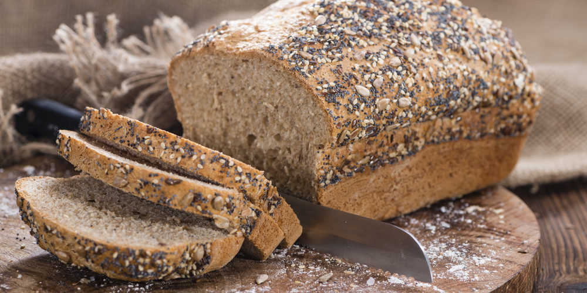

FRESH BREAD: RECETAS PANADERAS
PROCEDIMIENTO
- Precalentar el horno a 180°.
-
Calentar la taza de leche unos 30 segundos en el microondas, si lo
calienta en la hornalla procurar que no se hierva la leche.
-
Colocar el pancito de levadura cortada en trozos dentro de la taza de
leche caliente. Dejar que repose.
- Poner la harina dentro de un bol.
- Sumarle 3 cucharadas soperas de sal a la harina y mezclar.
- Colocarle a la mezcla las semillas y revolver.
-
Agregar la mezcla de la leche y levadura en el bol más una taza y media
de agua. Crear una mezcla homogenéa con todos los ingredientes.
-
Volcar la mezcla en una mesada y amasarlo durante aproximadamente 10
minutos, hasta que se forme una masa.
- Enmantecar y enharinar una budinera.
- Colocar la masa dentro de la budinera y esperar a que eleve.
-
Cocinarlo durante 45 minutos aproximadamente o hasta que la base del pan
este dorada.

Imagén ilustrativa de como quedaría el pan una vez que salio del horno
A CONTINUACIÓN TE DEJAMOS UN VIDEO CON MÚSICA PARA QUE ESCUCHES DE FONDO MIENTRAS COCINAS: